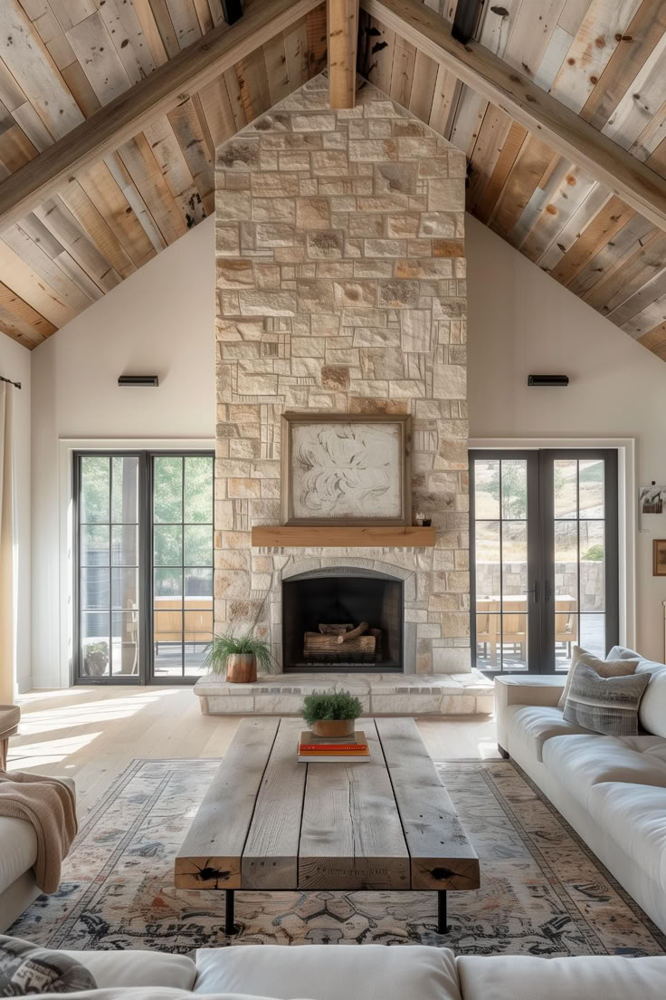
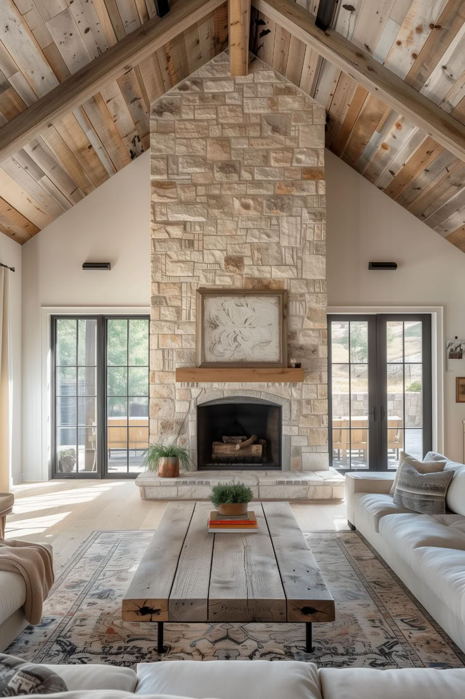
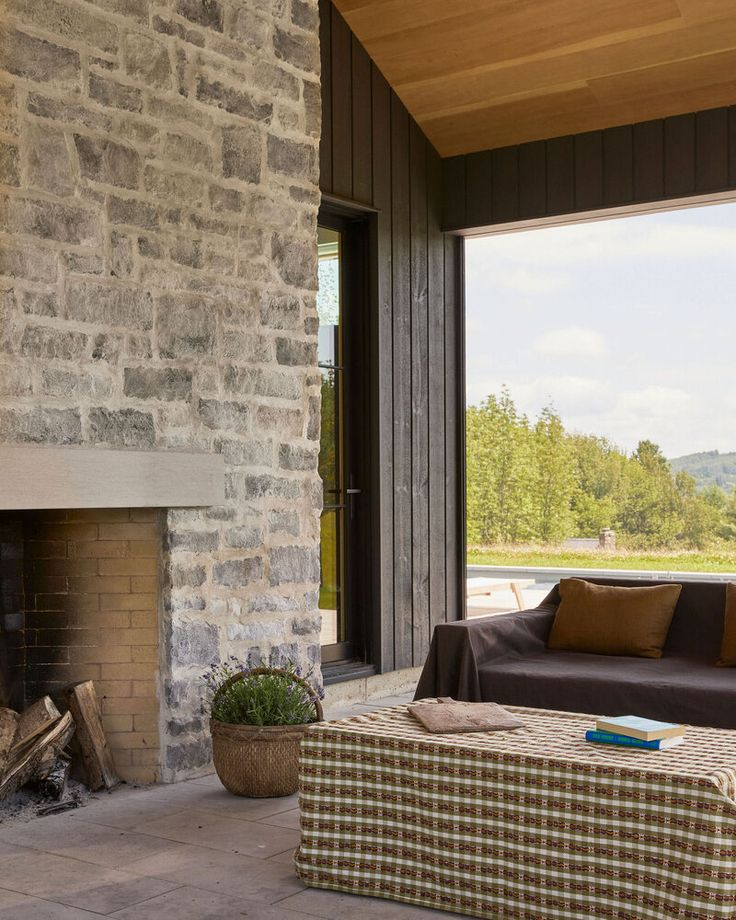
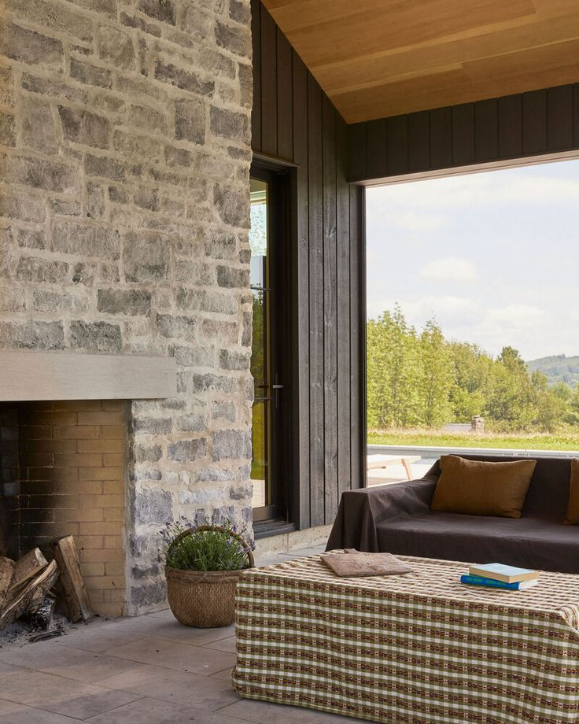
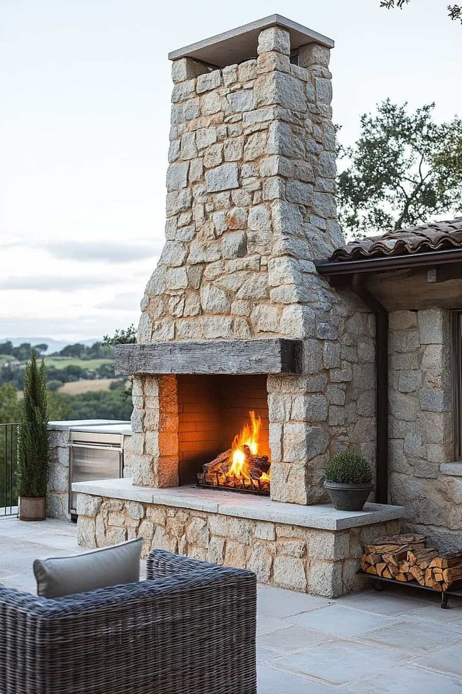
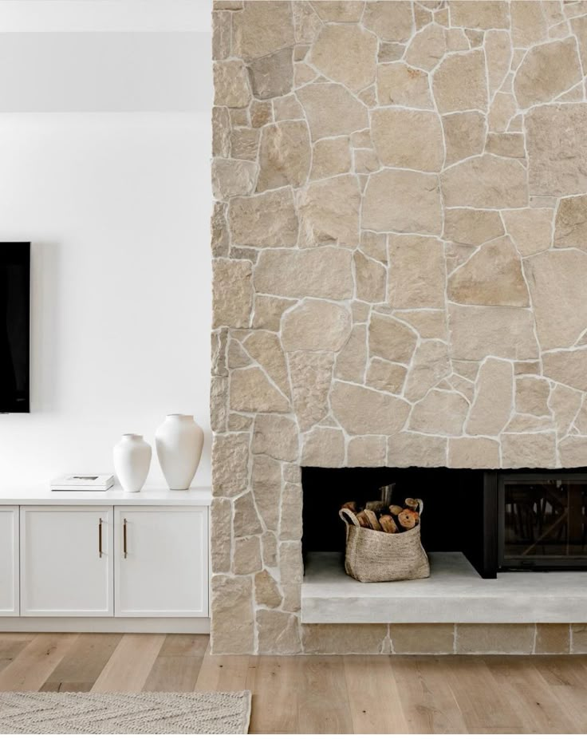
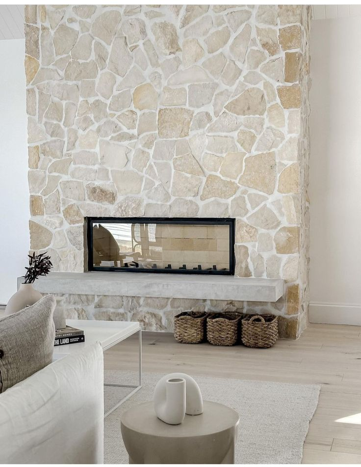
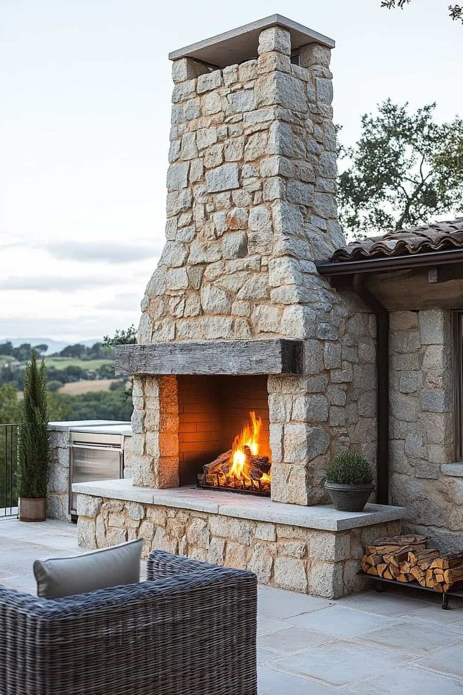
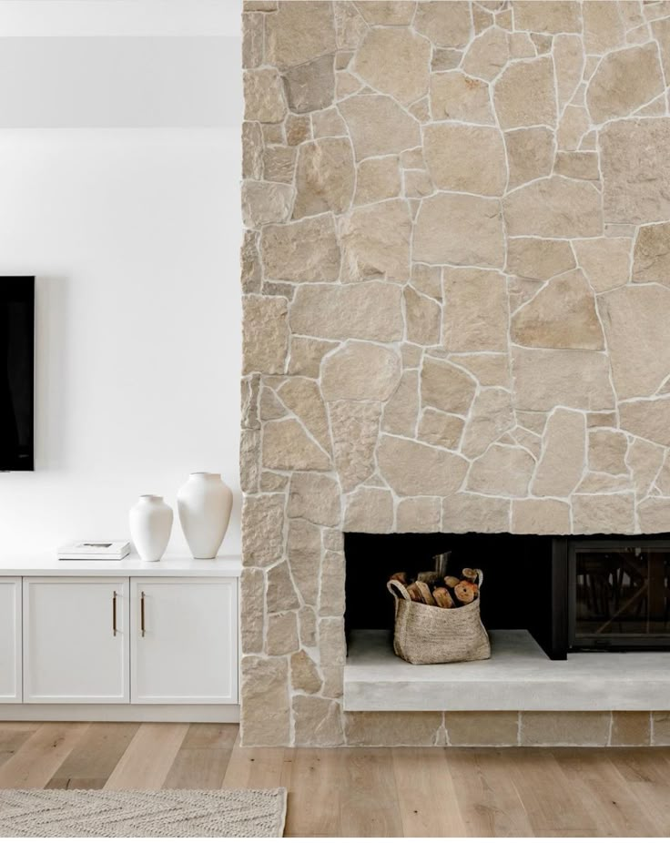
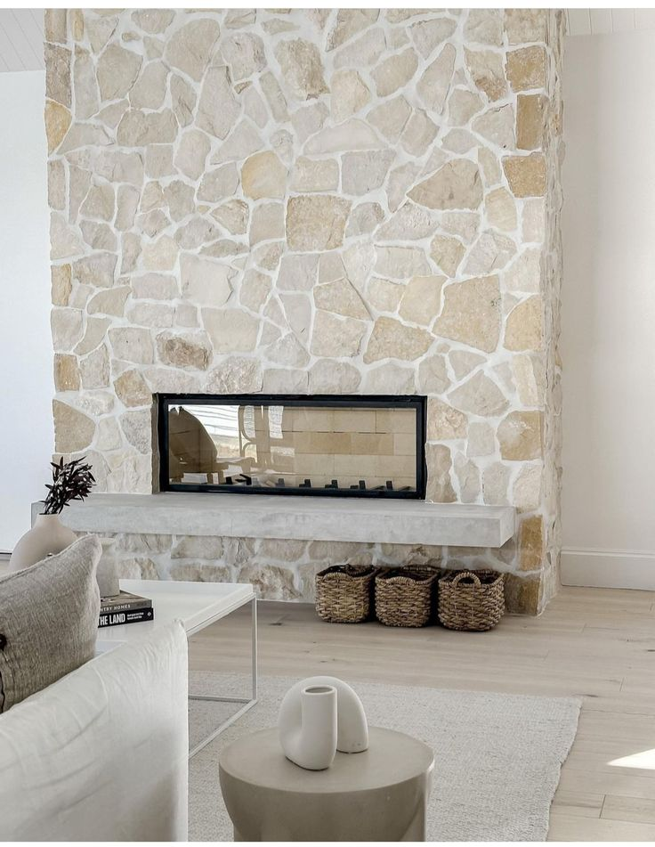

Neden Şömine Taş Kaplama?
Şömineler, evin atmosferini tamamlayan dekoratif ve fonksiyonel ögelerden biridir. Doğal taşlarla kaplanan şömineler estetik görünümüyle fark yaratırken, dayanıklı yapısıyla uzun ömürlü bir çözüm sunar.
Avantajları:
- Estetik ve doğal görünüm
- Isıya dayanıklı yüzey
- Kırvil şöminelere uyumlu tasarım
- Temizliği kolay ve bakım gerektirmez
Uygulama Alanları:
Salon, oturma odası, kış bahçesi veya şömine bulunan her alanda taş kaplama uygulaması gerçekleştirilebilir.
Fiyatlandırma Nasıl Belirlenir?
Kullanılan taş türü, şöminenin boyutu ve detaylara göre fiyatlar değişiklik gösterir. Size özel teklif almak için bizimle iletişime geçebilirsiniz.
 

 

 




